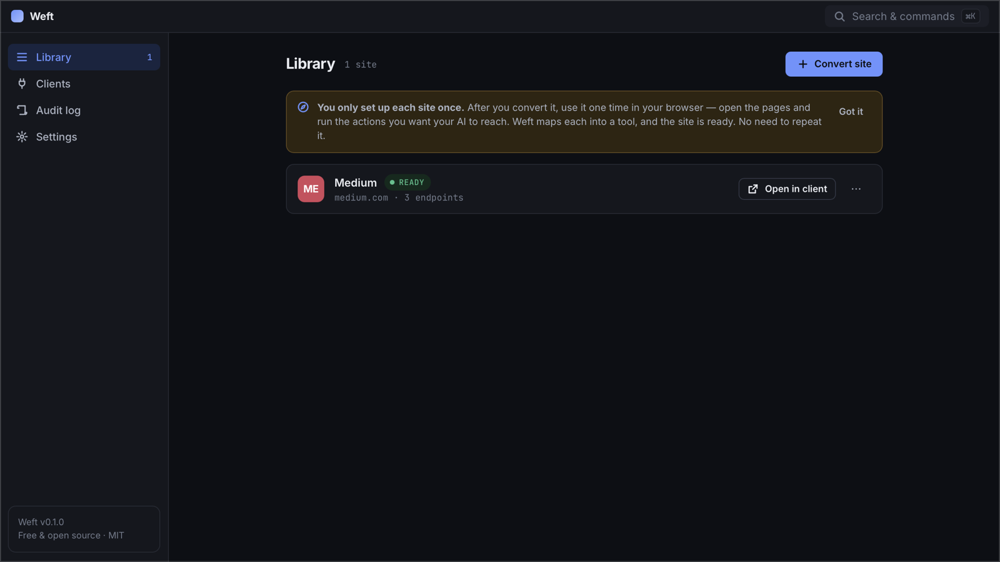
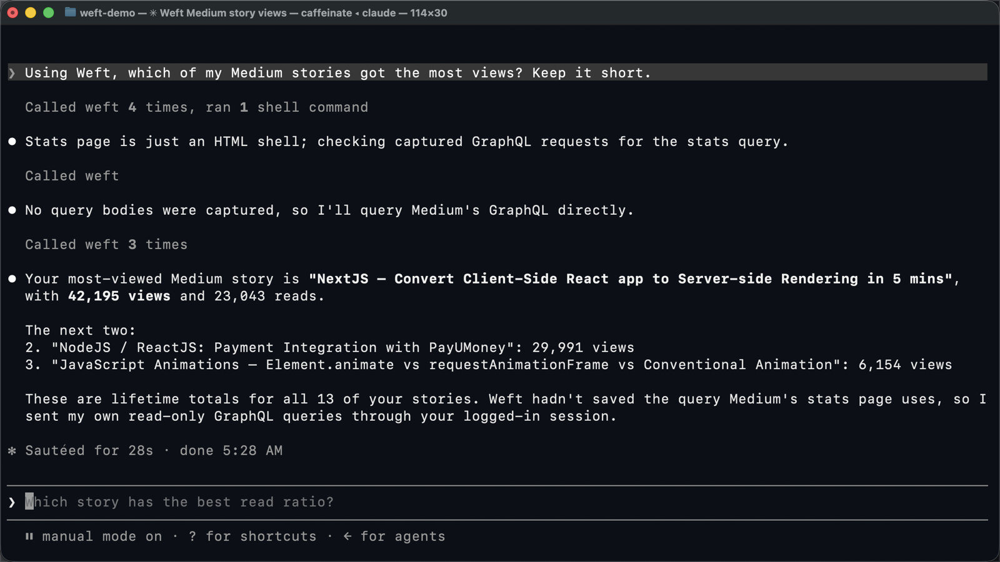

Weft gives Claude Code, Claude Desktop, Codex and Cursor access to the web apps you already use — through your own browser session. No API keys, no OAuth apps, no cloud.
macOS build is signed & notarized by Apple · MIT licensed · no account, no telemetry
Watch on YouTube · 2-minute walkthrough with Medium and Claude Code
Most web apps you use every day talk to a perfectly good JSON API behind the scenes — but there's no public API, no key you're allowed to create, or it's locked behind an enterprise plan. Weft lets your AI use that same API, as you, from your own machine.
Weft rides the session you already have in Chrome. If you can see it in the browser, your AI can ask for it.
Everything runs on 127.0.0.1. Nothing goes to us or anyone else — there is no "us" in the loop.
One click connects Claude Code, Claude Desktop, Codex or Cursor. Ask in plain English; Weft handles the calls.
Three steps, about a minute per site.
Open a site you're logged into and click Convert this site to MCP in the Weft extension.
Browse the pages you care about. Weft watches the site's own API calls and maps each one into a tool.
Connect your AI client from the Weft app, restart it, and ask. It calls the same API the website does — with your session.

Medium has no public stats API. With Weft, Claude Code queries Medium's own GraphQL API — the one the Medium web app uses — through the session you're already signed into.
No scraping, no copied cookies, no third-party server. Anything other than a GET needs explicit confirmation, so you see the exact query before it runs.

Weft speaks the Model Context Protocol, so any MCP client can use it. These four are set up in one click from the app.
Weft records cookie names and storage keys to understand how a site authenticates — never their values. When your AI makes a call, the request is replayed inside your own browser tab, using the session that's already there.
127.0.0.1 — no cloud, no account, no telemetryconfirm: trueWeft uses your own account, from your own machine, at human scale — the same requests your browser makes when you click around. Still, every site has its own terms. Use it for your own data and your own workflows, and don't use it to scrape or bulk-download.
Any site that loads its data from a JSON or GraphQL API in the browser — which is most modern web apps (Medium, Linear, Notion-style tools, dashboards, admin panels). Sites that sign every request or only stream over WebSockets are flagged as "not possible".
No. Your AI sees endpoint descriptions and the JSON responses. Cookie and token values stay in Chrome; Weft only ever sees their names.
Chrome (or another Chromium browser), Node.js 20+, and an MCP client such as Claude Code. Weft runs on macOS, Windows and Linux.
Yes — free and open source under the MIT license. No account, no paid tier.
Download Weft, add the extension, convert your first site. Takes about two minutes.